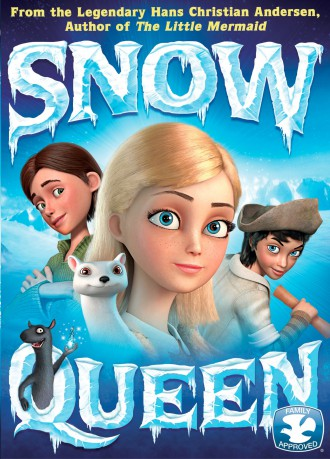
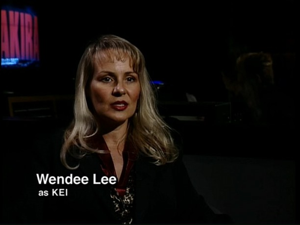

#2517 Die Schneekönigin - Eiskalt verzaubert
Alternativ: Snow Queen (Englischer Titel)
 
 IMDB-Wertung: 5.5 / 10
IMDB-Wertung: 5.5 / 10  Metascore: 0
Metascore: 0 
The Snow Queen created the world of eternal winter where the polar wind cools human souls and clearness of lines obscure emotions. A girl named Gerda, her pet ferret Luta, and Orm the troll must save her brother Kai and the world.
Jahr: 2012
Dauer: 80 Minuten
FSK: 6
Land: Russland Studio: Ascot Elite Home EntertainmentTonspuren: DTS - ,
Untertitel:
Auflösung: 1080p (1920x808) Größe: 4474 MB
Genre: Abenteuer, Animation/Trick, Familie, Weihnachten
Regisseur: Vladlen Barbe, Maksim Sveshnikov
Drehbuch: Vladlen Barbe, Donald Roman Lopez, Tim Richards, Vadim Sveshnikov
Soundtrack: Mark Willott
Darsteller:
- Yuriy Stoyanov als Korol
 Cindy Robinson als Snow Queen / Robber Hag
Cindy Robinson als Snow Queen / Robber Hag- Jessica Straus als Gerda
- Anna Shurochkina als Gerda
- Ivan Okhlobystin als Orm
- Galina Tyunina als Snezhnaya koroleva
- Dmitriy Nagiev als Vospitatel
- Elizaveta Arzamasova als Doch atamanshi
- Lyudmila Artemeva als Tsvetochnitsa
- Anna Ardova als Atamansha
- Ramilya Iskander als Kay
- Olga Shorokhova als
- Mikhail Tikhonov als Master Vegard / Prints / Sluga
- Olga Zubkova als
 Erin Fitzgerald als Luta
Erin Fitzgerald als Luta-  Wendee Lee als Shopkeeper / Flower Lady / Lapp Woman
- Marianne Miller als Kay
- Christopher Smith als Master Vegard / Prince / Robbers
 Kirk Thornton als Housemaster / Servant / Red Head / Robbers
Kirk Thornton als Housemaster / Servant / Red Head / Robbers
Datei: X:\Kinder Collections\Schneekönigin\Schneekönigin - Eiskalt verzaubert, Die (2012, FSK6, 1920x808).mkv seit 17.11.2015
Festplatte: Kinder-Filme+Trick
 Es gibt insgesamt 9 Filme in der Gruppe 'Kinder Collections\Schneekönigin'
Es gibt insgesamt 9 Filme in der Gruppe 'Kinder Collections\Schneekönigin'